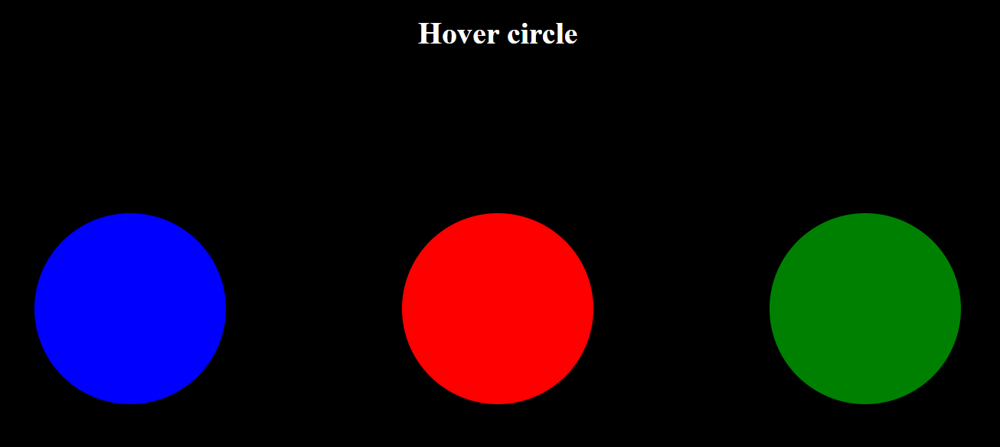

Основная HTML-разметка страницы и привязка событий Vue (@mouseenter, @mouseleave)
<!doctype html>
<html lang="ru">
<head>
<meta charset="UTF-8" />
<meta name="viewport" content="width=device-width, initial-scale=1.0" />
<title>Hover Circles</title>
<link rel="stylesheet" href="style.css" />
<script src="https://unpkg.com/vue@3/dist/vue.global.js"></script>
</head>
<body>
<div id="app">
<div class="circle green"></div>
<div class="circle blue"></div>
<div
class="circle red"
@mouseenter="moveCircle(true)"
@mouseleave="moveCircle(false)"
></div>
</div>
<script src="main.js"></script>
</body>
</html>Стили позиционирования кругов и анимация переходов
body {
background: black;
}
.circle {
width: 160px;
height: 160px;
border-radius: 50%;
position: absolute;
top: 50%;
left: 50%;
transform: translate(-50%, -50%);
transition: 1s;
}
.red {
background-color: red;
}
.green {
background-color: green;
}
.blue {
background-color: blue;
}Инициализация приложения Vue 3 и метод управления смещением элементов
const app = Vue.createApp({
methods: {
moveCircle(isHover) {
document.querySelector(".green").style.left = isHover ? "25%" : "50%";
document.querySelector(".blue").style.left = isHover ? "75%" : "50%";
},
},
});
app.mount("#app");